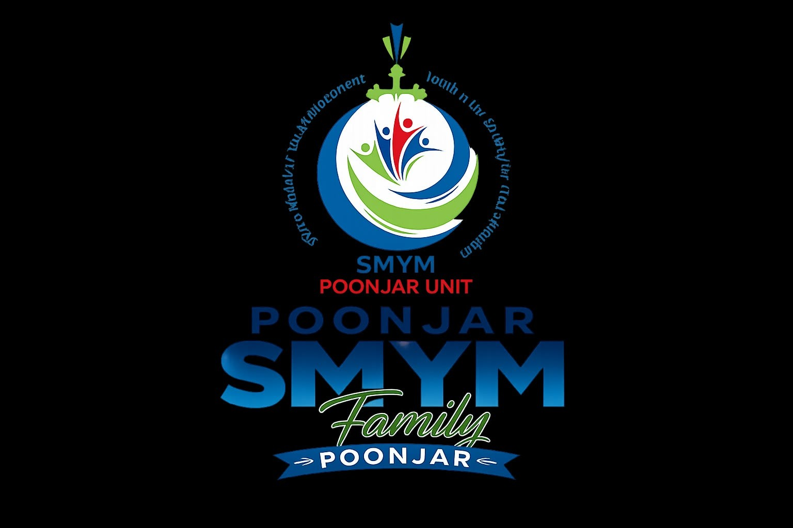

SMYM POONJARFaith • Fellowship • Service
SMYM Poonjar is the official youth movement of St. Mary's Forane Church, Poonjar, under the Syro-Malabar Church. Since its establishment in 2017, the movement has brought together young people to grow in faith, friendship, leadership and service. Through spiritual formation and social commitment, SMYM continues to shape responsible Christian youth who actively contribute to the Church and society.
To build a Christ-centred youth community inspired by the Gospel, committed to holiness, leadership, unity and selfless service.
To empower every young member through prayer, leadership opportunities, fellowship, social responsibility and active participation in parish life while becoming witnesses of Christ in today's world.
• Deepen faith through prayer and spiritual formation.
• Develop responsible Christian leaders.
• Promote friendship and unity among youth.
• Organize charitable and social service activities.
• Encourage creativity, culture and talents.
• Support parish ministries and evangelization.
St. Mary's Forane Church, Poonjar, is a vibrant Syro-Malabar parish known for its rich spiritual heritage and active youth participation. The parish provides a strong foundation where young people grow together in faith and serve the wider community.